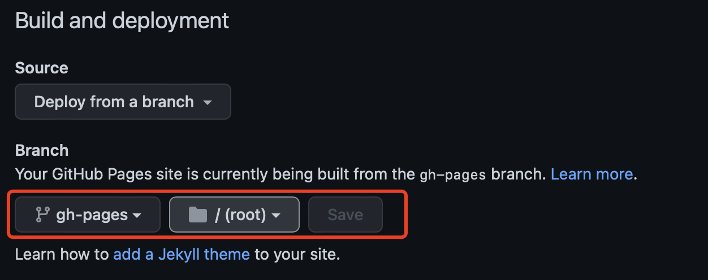

我的博客搭建
简介
关注内容，不花哨，不折腾。
可以像写书一样成体系，分章节。
渲染为网页展示的同时，也要对源码进行管理。
思路
使用 mdbook + github pages
repo的main分支用于书籍源码管理，gh-pages分支为生成的网页。
在github上创建用户站点，做为博客入口，展示并链接其它项目站点的文章。
另创建其它项目站点，用于写一些专题，可在用户站点的首页进行引导。
github actions
在仓库中添加.github/workflows目录，则github会在其中查找*.yml文件自动处理CI/CD。
这里我们添加个ci.yml文件，内容如下：
name: GitHub Pages
on:
push:
branches:
- main
pull_request:
jobs:
deploy:
runs-on: ubuntu-latest
permissions:
contents: write
concurrency:
group: ${{ github.workflow }}-${{ github.ref }}
steps:
- uses: actions/checkout@v3
- name: Setup mdBook
uses: peaceiris/actions-mdbook@v1
with:
mdbook-version: "latest"
# mdbook-version: "0.4.8"
- run: mdbook build
- name: Deploy
uses: peaceiris/actions-gh-pages@v3
if: ${{ github.ref == 'refs/heads/main' }}
with:
github_token: ${{ secrets.GITHUB_TOKEN }}
publish_dir: ./book
则每次对main分支进行提交时，自动把书籍build到gh-pages分支下。
注意的是，如果有私有域名，在用户站点的配置中添加cname的选项：
- name: Deploy
uses: peaceiris/actions-gh-pages@v3
if: ${{ github.ref == 'refs/heads/main' }}
with:
github_token: ${{ secrets.GITHUB_TOKEN }}
publish_dir: ./book
# 仅在用户站点下添加下面的配置
cname: tabliu.top
更多设置参考这里
设置
在github仓库中找到Settings->Pages, 选择站点使用的分支与路径，由于上面默认生成站点到gh-pages分支，这里选择gh-pages分支的根目录并保存。
